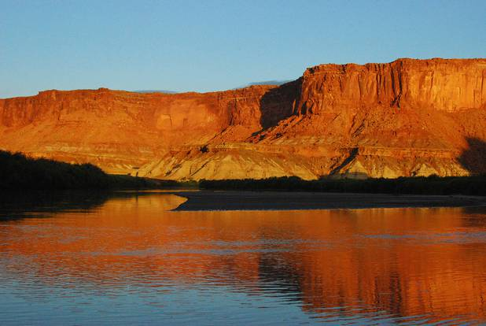
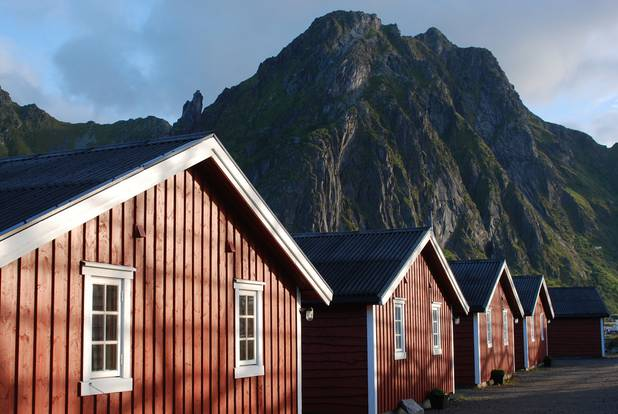

A carnival ride at the Boulder County Fair, 2015. Boulder, Colorado.
Hello.
Check out my photos!

Sunset on the canyon walls, August 2015. The sun sets quickly when you're in the canyon — it's a hot afternoon one moment and chilly evening the next.
The Green River, Utah+
A canoe in front of Tamarisk trees, which are green and lush and provide plenty of driftwood for fires, but are invasive — the National Park Service is trying to replace them with native pinyon pine and other species.
Canoeing on the Green River, Utah.+
Wildflowers in front of a 19th century barn in northeastern Vermont. The barn is still used for cows, turkeys, and storing hay.
Summer, Vermont.+
Waterlilies near Jackman, Maine, June 2013.
Early summer, Maine.+
Massive boulders along the Urubamba River near Machu Picchu
Aguas Calientes, Peru.+

Old fishing cabins in the Lofoten Islands, Norway. These were used for cod fisherman from the 1920s until recently, when they've been converted to tourist lodgings.
Lofoten Islands, Norway.+
A strangely anthropomorphic viewing telescope on the Jungsfraujoch in Switzerland — glacier in the background.
The Jungfraujoch, Switzerland.+
New England's notorious winter of 2015 iced over Boston Harbor, even freezing-in the Tea-Party museum's replica ships.
Boston's Tea Party Museum.+
Yvoire is one of les plus beaux village de France, famous for abundant flowers, medieval architecture, and a charming harbor on Lac Lemon.